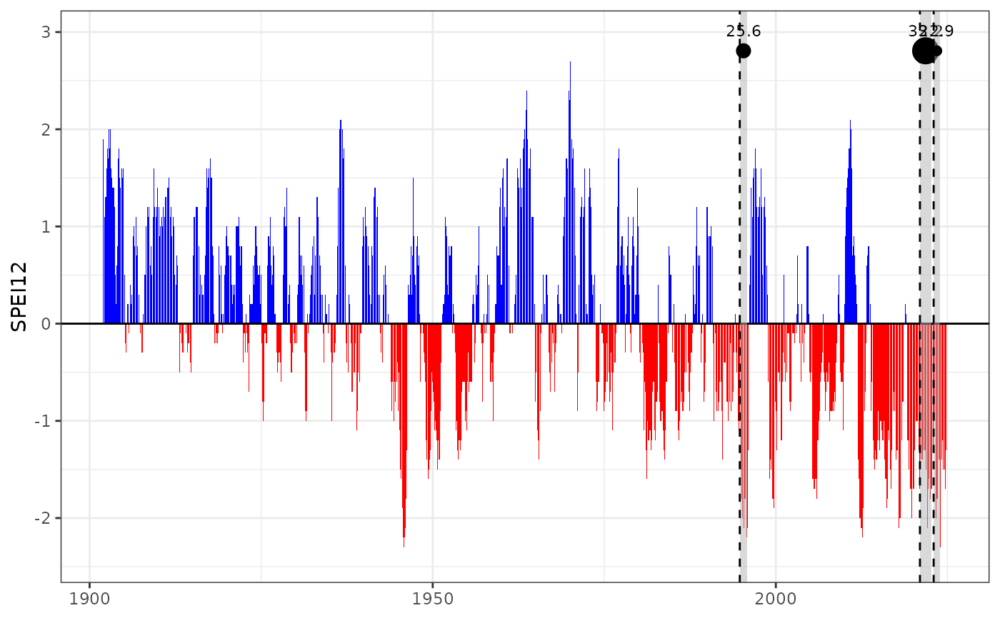

Add drought period (bands or markers) to a spei time series plot
Source:R/add_drought_events.R
add_drought_events.RdAdds shaded polygons, vertical lines, or both to a ggplot object to highlight drought events,
based on a drought assessment summary (as returned by droughts()). Optionally,
labels or points can be added to indicate drought severity.
Arguments
- p
A
ggplotobject created byplot_drought_ts().- drought_assessment
A data frame with columns
minyear,month_peak,d_duration,d_severity, and others, as returned bydroughts().- which_events
Display
"all"droughts or only the"top"events.- metric
If
which_events = "top", use this column to rank events. Options:"duration","severity","intensity","lowest_index".- top_n
Number of top events to display when
which_events = "top". Default to 5.- type
Type of marker to display:
"polygon"(shaded bands),"line"(vertical lines at peak), or"both".- line_col
Color of vertical line (if used).
- line_type
Line type of vertical line (e.g.
"dashed","solid").- pol_fill
Fill color of polygon (if used).
- pol_alpha
Transparency of polygon fill.
- show_severity
Logical. If
TRUE, plots a point and label for severity at top of each event.
Examples
data(spei_granada)
result <- droughts(spei_granada, vname = "spei12", threshold = -1.28)
p <- plot_drought_ts(spei_granada, vname = "spei12")
add_drought_events(
p,
drought_assessment = result$drought_assessment,
which_events = "top",
metric = "severity",
top_n = 3,
type = "both",
show_severity = TRUE
)
